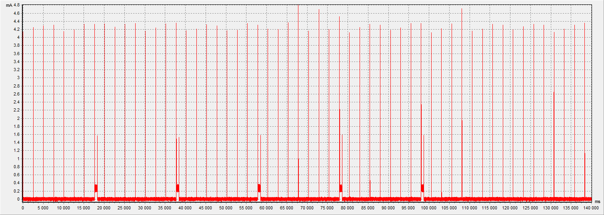
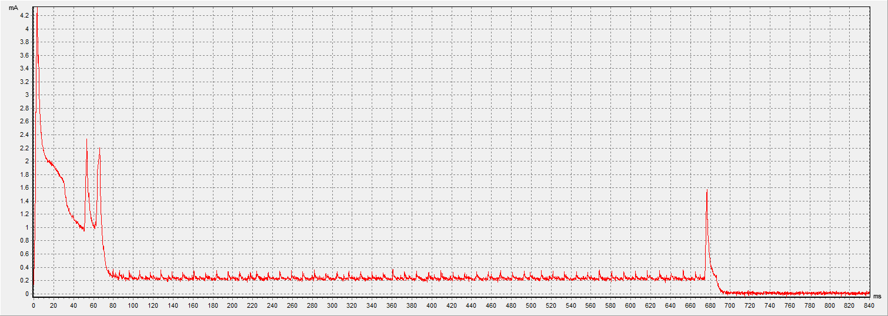
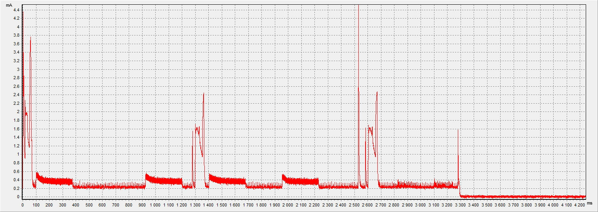
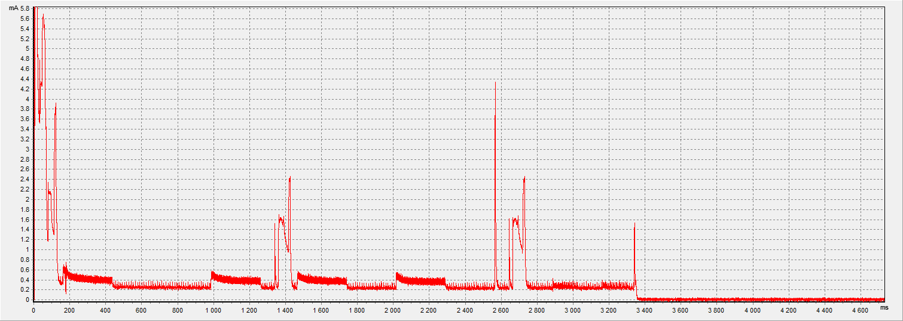

Average power consumption of custom firmware (ver: 2.7) on CGG1.
Device operation in Advertising mode:
Average consumption: 23.6 uA (window: 140 sec, power: 3.3V)
RF TX Power: +3.1 dbm
Advertising interval:

EPD update in Advertising mode:
Average consumption: 319 uA (window: 840 ms, power: 3.3V)
EPD refresh in Advertising mode:
Average consumption: 312 uA (window: 4240 ms, power: 3.3V)
Pulse Advertising mode:

Average consumption: 361 uA (window: 50 ms, power: 3.3V)
RF TX Power: +3.1 dbm
On 'nRF Connect' connection mode:

Connection time stamp about 2500 ms, Disconnect - 25300 ms
RF TX Power: +3.1 dbm
Startup (Power On):
Average consumption: 367 uA (window: 4733 ms, power: 3.3V)